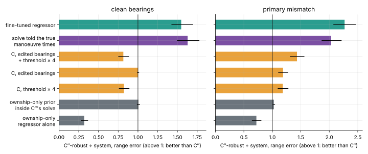
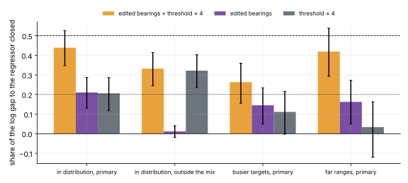
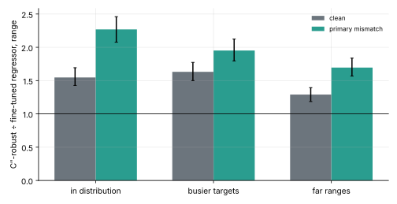

Where the regressor's gain comes from
Classical hardening closes part of the gap; the rest is still unexplained
2026-11-28 · spec 038 · gitma2 · a registered study, not a gate · nothing trained
Overview: the question
- Spec 037: a learned regressor is twice as good in range as C″ under bearing errors.
- Its panel: the comparison cannot say why.
- Two explanations were left: the classical segmenter was never hardened; the regressor knows the simulator's statistics.
Overview: three probes, nothing trained
- Harden C: edit wild bearings out of what it sees; raise its confirmation threshold.
- The prior alone: a regressor that reads the ownship's track only, alone and inside C″'s solve.
- Move the statistics: busier targets; far initial ranges.
Settings chosen on spent seeds 321 and 370; readings registered; seed 372 scored once.
The systems on the test seed

500 engagements, in distribution. A solve told the true manoeuvre times sits beside the regressor.
How much hardening closes

Registered reading G: 0.44 [0.35, 0.53], "between". The panel: a tail; about a quarter for the typical engagement.
The cost
- Raising the threshold costs on clean data: 0.82 in geometric mean.
- Median engagement unchanged; twice as bad in one in five.
- Editing wild bearings alone costs nothing and closes about a fifth under mismatch.
The prior alone explains nothing, and tests little
- Ownship-only regressor alone: 0.33 median range error.
- Inside C″'s solve: 1 to 3% of the regressor's gain.
- The panel: too weak to move the solve, so "prior or bearings" is not answered.
Where the regressor beats a solve told the truth
| told true times ÷ regressor, range | tight bound | loose bound |
|---|
| clean | 0.77 | 1.15 |
| primary mismatch | 0.93 | 1.34 |
Above 1 the regressor is better. It wins where the bearings determine little: what prior knowledge would look like. Not tested.
Where the statistics are moved

The lead is smaller on far ranges and on busier targets under mismatch. The panel: mostly C″-robust moving.
Not achieved
- A prior control tight enough to move the classical solve.
- A classical segmenter that closes the gap at no clean-data cost.
- A test of whether the lead goes where C″'s segmentation holds.
Next (the owner's choice)
- Recommended: a causal classical estimator given the generator's own priors, on CPU.
- Then a better real-time segmenter, against the solve told the true times.
- No GPU spending; nothing carried.